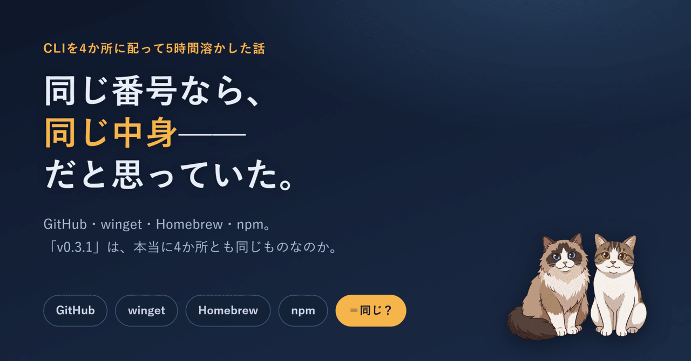

小さな CLI を 4 か所に配るだけのつもりが、5 時間溶けた。溶けたのは全部 npm だった。そして溶かしている途中で「この 4 か所、本当に同じものを配れているのか？」というぞっとする問いに足を止められた——という記事の、設計側の整理メモ。
配り先は GitHub Releases、winget、Homebrew、npm の 4 つ。利用者の入口に合わせて並べる発想で、タグを 1 つ打てば自動で揃うはずだった。実際には 3 つは綺麗に通り、最後の npm だけが何度も赤く止まった。原因はレート制限（429 Too Many Requests）。焦って間隔を詰めると窓がリセットされてむしろ悪化する。
そして詰みかけだったのは、レート制限よりも「やり直しが効かない」構造のほうだった。最後の npm だけ直して流し直したいのに、流れ作業の頭から走るので、もう公開済みの GitHub Release に「それはもう在るよ」と弾かれて全体が止まる。3 つは公開、npm だけ宙ぶらりん、しかも素直にやり直せない。
最初に思いついたのは順番の入れ替えだった。一番こけやすく不可逆な npm を「先に」出せば、こけても他は何も公開していないからやり直しが効く。発想自体は悪くない（不可逆なものを先に確定させる、はリリース設計の定石）。
でも、ここで手が止まった。「npm を先に出す」には、ほかの 3 つより先に npm 用のバイナリが要る。つまり 正本ができる前にもう一回ビルドして、それを npm に詰めることになる。npm の中身は「1 回目のビルド」、GitHub たちの中身は「2 回目のビルド」。二度焼いたパンは別のパンだ。やり直しを楽にしたくて入れた案が、いちばん守りたかった「全部が一組から出ている」を壊していた。
ここで根本の問いに行き当たる。4 か所に v0.3.1 として並べる。番号は同じ。でも番号が同じだからって、配っているバイナリまで同じだと、誰が保証しているんだろう。
調べてみると、配り先ごとに「同じであることの担保のされ方」がまるで違った。整理するとこうなる。
再梱包する以上、「どこから取り出したバイナリを詰めたか」次第で、同じ番号なのに違う中身を配れてしまう。これが急所だった。
ここでようやく、ごちゃ混ぜにしていた 2 つの問題が分かれて見えた。
1 個の打ち手で 2 つ片付けようとすると、だいたいどこかに無理が出る。同一性は「ビルドは 1 回だけ・正本から取り出す」で、再実行は「チャネル別の専用入口」で、別の道具で解くのが正しかった。
もうひとつ引っかかっていた違和感。npm に出すときだけ、わざわざ Linux 環境（WSL）を経由して箱詰めしていた。Windows で完結しないのが気持ち悪かった。
掘ると理由はたった一点。Linux と Mac ではファイルに「実行していい」という小さな印（実行ビット）が要る。Windows で箱詰めするとこの印を付けられない。印のない実行ファイルは相手の環境で「権限がない」と弾かれる。だから印を付けられる Linux 環境を経由していた、というだけだった。
気づきはここ。印は箱詰めのときに焼き込まなくても、ツールを起動する瞬間に付け直せばいい。起動役の小さなスクリプトが、実行ファイルを呼ぶ直前に「実行していい」と付けてから呼ぶ。そうすれば、どこで箱詰めしようと関係ない。WSL を経由する理由そのものが消える。回避策をひとつ覚えるより、回避する必要をなくすほうがいい。
並べてみて、はっとした。WSL を経由していたのも、レート制限を手で待って何度も叩いていたのも、リリースノートが空なら手で貼り直していたのも、認証トークンを 2 か所に書き写していたのも——ぜんぶ「人がその場で踏む手順」だった。
事故は、賢い手順を覚えていないから起きるんじゃない。手順が人の手に残っている限り、いつか誰かが（だいたい自分が）踏み外す。本当の直しは、手順をうまくすることじゃなくて、手順から人を抜くこと だった。
トークンの話も根は同じで、固定の鍵を 2 か所で手管理している限りいつかズレる。だったら鍵そのものを置かず、その場で発行する仕組み（OIDC / trusted publishing 系）に寄せる。置き場所が増えるほどズレる という当たり前に、遅れて気づいた。
この記事の打ち手は、このツール 1 本の話で終わらせないことにした。次に作るどのプロジェクトでも初期設定として敷く基準として、別ファイルに書き起こしてある。